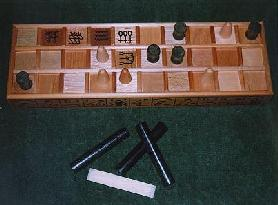
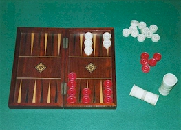
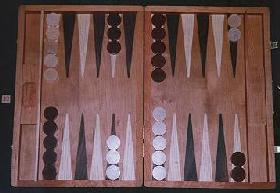
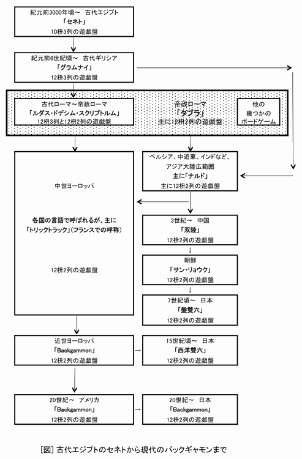

この文書は、James Masters さんの Backgammon - History and Useful Information という文章の中のバックギャモンの歴史に関する記述を、James さんの許可のもと 和訳したものです。 翻訳ミスや、内容に関する補足等は、ぜひ 教えてください。
| 
この写真は、現代の商品版セネトであり、著者のコレクションの一つである。 |
古代エジプトの遺跡から、10桝3列のゲーム盤が数多く発見されてきた。そのゲームは、古代エジプト人には30枡のゲームを意味するセネト (Senet, もしくはときどき Senat) と呼ばれていた。正確なルールは知られていない。12枡3列、6枡3列といった他のパターンの似かよった盤も発見されているが、それらが違ったゲームなのか単なる変種なのかは、はっきりとしていない。セネトの特徴と、 20桝のゲーム というエジプトで人気があった別のゲームの特徴をあわせもったような盤もたくさん発見されている。 |
紀元前3500年頃の王朝誕生前のエジプトの墓から、セネトのゲームボードの一部に見えるような見えないようなものが発掘されているが、これがセネトであるという推測は賢くない。同時代の Merknera の墓の壁画にも同じようなゲームが描かれているとするウェブサイトも存在するが（Wikipediaを含む）、著者の知る限りでは、これはただのごみで根拠がない。したがって、セネト誕生の時期は、確実に分かっているところでは紀元前3000年であり、そうだとしても世界最古のゲームとして最有力候補の１つである。
歴史学者達は、セネトがバックギャモンの初期の祖先であると信じている。バックギャモンは、現在世界各国で最も広く遊ばれているゲームの１つであり、国際的な競技として普及している。今日では、バックギャモンは世界各国のプレイヤーがコンピュータとインターネット回線を使って戦うことも可能である。
2004年に、考古学者が古代イランの燃やされた都市 (ペルシャ語で Shahr-e Sukhteh1)) から古いゲームを発掘した。多くの人は、これを世界最古のバックギャモンであると呼んだ。それは紀元前3000年のもので、黒檀でできた長方形の盤と、トルコ石とめのうで出来たコマと、ダイスがあった。盤は蛇が20回とぐろを巻いている模様が彫刻されている。今日のバックギャモンでは24個のスロットがあるが、このゲームでは20個であり、また今日のバックギャモンでは30個のコマがあるのに対し、このゲームでは60個のコマがあることから、今日のルールとは極めて異なったルールで遊ばれていたか、あるいはまったく関係のない何か別の物であったと考えられる。
このボードの発見は、「セネトがバックギャモンの祖先である」というバックギャモンの歴史に関する通説に対して、異説をもたらす。なぜならば、もしもこのゲームがバックギャモンの直接の祖先であれば、おそらくセネトはバックギャモンの祖先ではなくなるためだ2)。しかし、このゲームがバックギャモンの祖先であるとすると、このゲームから古代ローマのバックギャモンの祖先までの間には、3000年の空白があり、この空白を埋めることは難しい。一方、セネト理論はセネトから今日までの5000年間を途切れなく結んでいる。そのことからも、セネトが発展してバックギャモンになったという理論は、まだ覆されたとは言えないだろう。
はっきりしていることは、このボードの発見により、完全な形で発掘された最古のボードゲームの記録が、ウル王朝のゲームからこの古代イランのゲームへと新しく塗り替えられた、ということである。
バックギャモンタイプのゲームは、世界各地で何千年もの間、そしてエジプト、ギリシャ3)、ローマ時代には確実に遊ばれていた。ローマ人が、ルダス・ドデシム・スクリプトルム (Ludus Duodecim Scriptorum; 12本の線のゲーム) と呼ばれたゲームをしていた証拠はたくさんある。このゲームは、おそらくはエジプトの12枡3列のセネトが元となっていて、3つの6面体ダイスを使って遊ばれていたが、これもまた完全にはルールが分かっていない。紀元１世紀には、ルダス・ドデシム・スクリプトルムは12枡2列の盤を使う変種にとってかわられるようになった。そのゲームは、６世紀には「アレア(Alea)」と呼ばれるようになった。これら２つのゲームは、他のいくつかのゲームとともに「タブラ (Tabula)」と呼ばれた。タブラは「ボードゲーム」を意味する一般的な名称であり、中世初期には、もっとも普及していたボードゲームであるドゥコデシム・スクリプトルム (Ducodecim Scriptorum)、アレア、バックギャモンを通常は意味していた。これは、ちょうど今日のイギリス英語では、「フットボール」という一般的な用語が「サッカー」を通常は意味することと同様である。
アジアでは、ナルド (Nard) というゲームが西暦800年以前に南西アジアかペルシャのどちらかで発祥した。双方の歴史に残っているので、あとはどちらの歴史を信じるかである4)。そして、アジア大陸全域において、今日、そのナルドが元となっているゲームがプレイされている。中国の歴史によれば、ナルドの中国語である双陸（雙陸）というゲームが西インドで発明され、魏 (220 - 265 AD) の時代に中国に伝わり、西暦479年から1000年の間に普及した。日本では、そのゲームは盤双六（雙六）と呼ばれ5)、持統天皇 (690 - 697 AD) の時代に禁止令が出された。一方、ナルドはアラブ民族のシシリア占領 (902 AD) 後に、イタリアかスペイン経由でヨーロッパに伝わった。
このゲームがはじめてイングランドの文献に記録されたのは、1025 年に出版された The Codex Exoniensis の中の「その２人は Tables に座らなければならない」という記述である。Tables は、おそらく十字軍から帰った人がイングランドに持ち帰ったのであろう。ナルドや Tables は、中世ヨーロッパ全域でプレイされ6)、イングランドの酒場で非常に流行した。しかし、15世紀になるとチェスがより人気のあるゲームとしてとってかわった。16世紀末までの間に、どういったわけか、Tables は平らな場所、つまりテーブルの上でプレイされるゲームの総称となった。お金をかけて遊ぶ多くのゲームがそうであるように、イングランドの権力者により衰退させられ、エリザベス１世の時代までは、公共の施設内で Tables をすることは禁止する法律が施行されていた。
しかし、17世紀初期になると、そのゲームはいくつかのルールの変更がされた上で再生し、再びヨーロッパ全域に広まった。その名称はいろいろあり、 ほとんどは今日まで同じ名称となっている。
| 
写真：著者の親のコレクションより |
イングランド - Backgammon スコットランド - Gammon フランス - Tric-Trac ドイツ - Puff スペイン - Tablas Reales イタリア - Tavole Reale チェコ - Vrhcáby |

写真：著者のコレクションより |
バックギャモン (Backgammon) という用語が、ウェールズ語の back (小さい) と gammon (戦い) に由来するのか、サクソン語の bac (後ろ)と gamen (ゲーム)に由来するのかは、議論が分かれるところである。
バックギャモンは第一次世界大戦の前にまた復活するが、20世紀の中ごろには衰退し、今日のようにポピュラーなゲームとして復活するのは、1970年代に入ってからである7)。今日でも、中東諸国ではトリック・トラックとして広く遊ばれている。
バックギャモンには、以下のようにいろいろな変種ルールがある8。シュエット (Chouette; ３人または４人で対戦するバージョン)、 パートナーバックギャモン、シックシー・エイシー (Sixey-Acey)、 オランダバックギャモン、トルコバックギャモン (Moultezim)、ギリシャバックギャモン (Plakato)、Gioul (中東から)、 エイシー・デューシー (Acey Deucey; オランダバックギャモンの米軍バージョン)、ヨーロッパ・エイシー・デューシー、ロシアバックギャモン、タバード・バックギャモン (Tabard Backgammon)、そしてアイスランドバックギャモン (Kotra) である。
1) Wikipedia: Shahr-i Sokhta
2) セネトと古代イランのゲームに未発見の共通の祖先があるという可能性は否定できない。その場合は、古代イランのゲームは直接の祖先ではないが親類であるということになるだろう。
3) 古代ギリシアではグラムナイというゲームが愛好されたと言われている。
4) ナルドの発祥は、タブラが起源であるという説とグラムナイが起源であるという説がある。
5) 中国から朝鮮を経て日本に伝わった。朝鮮では「サン・リョウク（六の二倍という意味）」という名前で広がった。日本最古の記録は「日本書記」で、正倉院の宝物に５面の雙六盤が納められている。奈良時代から江戸時代まで広く遊ばれるが、幕末から明治維新にかけて廃れて行く。15世紀以降に西洋から渡来した西洋雙六はあまり普及しなかった。明治以降に再伝来したバックギャモンは、盤双六と歴史的な連続性はないとされている。
参照：Wikipedia (すごろく）
6) 中世ヨーロッパでは、タブラが各国の言語で名付けられた。最も代表的な呼称はフランスの「トリックトラック」である。
7) 1920年代にアメリカでダブリングキューブが発明されたことが、ゲームに深みを増して普及に弾みがついたとの見方をする人が多い。
8) 参照：Backgammon Variants
古代エジプトのセネトから現代のバックギャモンに至る変遷を一覧できる図を、rokopinkさんに提供していただきました。拡大図と印刷用PDFファイルもあります。

This page is a Japanese translation of the review of
History of Backgammon
written by James Masters.
Translated by Katsutoshi Seki in August, 2000.
Figure donated by rokopink added and updated text translated in 2009.
{kind=link}